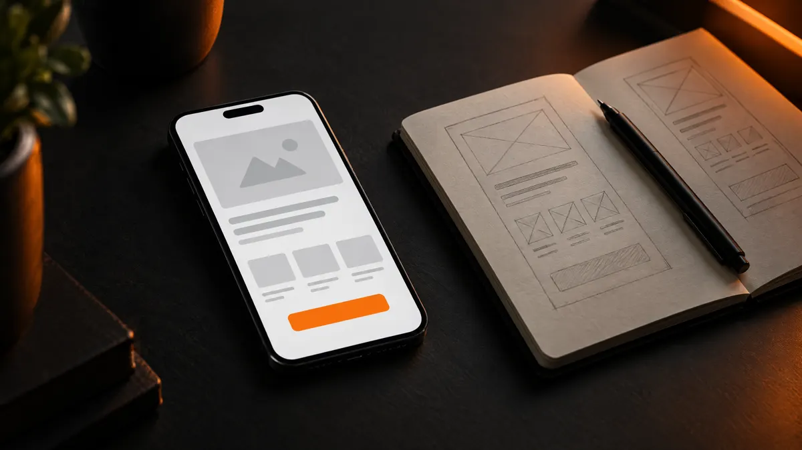

דף נחיתה שממיר: 9 רכיבים שחייבים להיות בו
דף נחיתה טוב לא צריך להיות ארוך או מתוחכם. הוא צריך לענות מהר על שלוש שאלות: מה אתם מציעים, למה לסמוך עליכם, ומה עושים עכשיו. הנה הרכיבים שעושים את זה.

בקצרה: דף נחיתה שממיר הוא דף עם מטרה אחת ברורה. הוא פותח בכותרת שאומרת מה מקבלים, מראה מיד למי זה מתאים, נותן סיבות אמיתיות לסמוך עליכם, ומסתיים בפעולה אחת פשוטה כמו וואטסאפ או טופס קצר.
רוב הדפים שלא מביאים פניות נופלים על אותם דברים: כותרת כללית מדי, יותר מדי אפשרויות, טעינה איטית בטלפון, וכפתור שלא ברור מה קורה כשלוחצים עליו.
מה זה בעצם "דף נחיתה שממיר"
"להמיר" פירושו שמי שנכנס לדף עושה את הפעולה שרציתם: שולח הודעה, משאיר פרטים, קובע תור או קונה. דף נחיתה הוא עמוד שנבנה בשביל הפעולה הזאת בלבד. אין בו תפריט עמוס, אין בו עשרה נושאים, ואין בו קישורים שמוציאים את הגולשים החוצה.
ההבדל בין דף נחיתה לדף הבית של אתר הוא המיקוד. דף הבית מציג את כל העסק. דף נחיתה מדבר עם קהל אחד, על הצעה אחת, ומבקש פעולה אחת. בגלל זה הוא מתאים במיוחד לקמפיינים ממומנים, להשקה של מוצר או שירות חדש, ולעצמאים שרוצים נוכחות ברורה בלי אתר שלם.
אם אתם עוד מתלבטים בין דף נחיתה לאתר מלא, כתבתי על ההבדלים ועל מה שמשפיע על ההיקף במאמר כמה עולה לבנות אתר לעסק.
9 הרכיבים שחייבים להיות בדף
אלה הרכיבים לפי הסדר שבו הם מופיעים בדרך כלל, מלמעלה למטה. לא כל דף צריך את כולם באותו גודל, אבל דף שחסר בו אחד מהם מרגיש חסר.
- כותרת שאומרת מה מקבלים. לא שם העסק ולא סיסמה. משפט אחד שאומר מה אתם עושים ובשביל מי. "סטודיו לפילאטיס בכפר סבא" עדיף על "התנועה שלך, הדרך שלך".
- משפט משנה שמוסיף פרט חשוב. איפה, תוך כמה זמן, או מה מיוחד בדרך שלכם. זה המקום להוריד את השאלה הראשונה שעולה לגולשים.
- כפתור פעולה אחד, בולט, כבר במסך הראשון. "שלחו הודעה בוואטסאפ" ברור יותר מ"צרו קשר". מי שכבר החליט לא צריך לגלול כדי למצוא איך פונים אליכם.
- תמונה או סרטון שמראים את הדבר האמיתי. את המקום, את המוצר, את התוצאה או אתכם. תמונות מאגר כלליות נראות כמו כל דף אחר ולא מוסיפות אמון.
- למי זה מתאים, ולמי פחות. שתיים או שלוש שורות שעוזרות לגולשים לזהות את עצמם. דווקא לכתוב למי זה לא מתאים בונה אמון, כי זה מראה שאתם לא מנסים למכור לכולם.
- מה מקבלים בפועל. רשימה קצרה וקונקרטית של מה כלול, במילים של הלקוח ולא במונחים מקצועיים. "תוכנית אימון לשמונה שבועות" ברור יותר מ"מעטפת ליווי הוליסטית".
- סיבות לסמוך עליכם. המלצות אמיתיות עם שם, עבודות קודמות, תעודות או ניסיון. רק דברים אמיתיים. המלצה מומצאת מזיקה יותר מהיעדר המלצות.
- תשובות לשאלות שעוצרות אנשים. כמה זמן זה לוקח, מה קורה אם זה לא מתאים, איך מתחילים. שלוש עד חמש שאלות קצרות מורידות חלק גדול מההיסוס.
- סיום עם אותה פעולה. בסוף הדף חוזרים על הכפתור, עם משפט קצר שמזכיר מה קורה אחרי הלחיצה. מי שקרא עד הסוף הוא בדיוק מי שאתם רוצים שיפנה.
איך זה נראה בפועל: דוגמה לפני ואחרי
כדי שזה יהיה מוחשי, הנה דוגמה לעסק בדיוני, קליניקה לפיזיותרפיה. אותו עסק, שני ניסוחים של החלק העליון בדף:
| רכיב | לפני | אחרי |
|---|---|---|
| כותרת | ברוכים הבאים לקליניקה שלנו | פיזיותרפיה לכאבי גב וצוואר, בלי רשימת המתנה |
| משפט משנה | אנחנו מאמינים בטיפול אישי | טיפול ראשון כבר השבוע, בהרצליה או בבית שלכם |
| כפתור | צור קשר | קביעת טיפול ראשון בוואטסאפ |
| תמונה | אישה מחייכת מתמונת מאגר | חדר הטיפולים האמיתי, עם המטפלת |
| אמון | "שירות מקצועי ואמין" | שלוש המלצות עם שם פרטי ועיר |
בעמודת "לפני" אין שום דבר לא נכון, אבל אין בה גם שום דבר שגורם להשאיר פרטים. בעמודת "אחרי", מי שנכנס יודע תוך כמה שניות אם זה בשבילו ומה לעשות עכשיו.
הטעויות שהכי הרבה פוגעות בפניות
יותר מדי אפשרויות. כפתור לוואטסאפ, טופס, טלפון, מייל, אינסטגרם ופייסבוק, הכול באותו גודל. כשיש שש דרכים לפנות, הרבה אנשים לא בוחרים באף אחת. בחרו פעולה ראשית אחת, ותנו לשאר להופיע בקטן.
טופס ארוך. כל שדה נוסף הוא עוד סיבה לוותר. ברוב העסקים מספיקים שם וטלפון, או הודעה מוכנה בוואטסאפ. את שאר הפרטים אפשר לשאול בשיחה.
דף שנבנה למחשב. רוב הכניסות לדפי נחיתה, במיוחד מפרסום ברשתות, מגיעות מהטלפון. אם הכפתור קטן, הטקסט צפוף או התמונה כבדה, הדף מפסיד את רוב הגולשים לפני שהם בכלל קראו.
טעינה איטית. מי שלחץ על מודעה מחכה שניות ספורות, לא יותר. תמונות לא דחוסות, סרטון כבד בראש הדף ותוספים מיותרים הם הסיבות הנפוצות.
הבטחה שלא מתאימה למודעה. אם המודעה מדברת על משהו אחד והדף פותח במשהו אחר, הגולשים חוזרים אחורה. הכותרת בדף צריכה להמשיך בדיוק את מה שהביא אותם.
רשימת בדיקה לפני שעולים לאוויר
לפני שמפנים לדף תנועה, ובמיוחד לפני שמשלמים על פרסום, כדאי לעבור על הרשימה הבאה בטלפון, לא במחשב:
- האם מבינים מה אתם מציעים בלי לגלול?
- האם הכפתור הראשי נראה במסך הראשון, וגדול מספיק לאגודל?
- האם לחיצה על הכפתור עובדת, ופותחת בדיוק את מה שצריך?
- האם הדף נטען מהר גם ברשת סלולרית?
- האם כל הטקסטים קריאים, בלי לעשות זום?
- האם יש לפחות סיבה אמיתית אחת לסמוך עליכם?
- האם מודדים כמה אנשים לוחצים על הכפתור, כדי לדעת אם שינוי עוזר?
הסעיף האחרון חשוב יותר ממה שנראה. בלי מדידה אי אפשר לדעת אם הכותרת החדשה עובדת טוב יותר מהקודמת, או שזה רק נראה ככה.
מתי דף נחיתה מספיק, ומתי כדאי אתר
דף נחיתה מספיק כשיש לכם הצעה אחת ברורה וקהל אחד. עצמאים, נותני שירות בתחום אחד, קמפיין לתקופה מוגבלת או השקה של מוצר. הוא מהיר לבנייה, קל למדוד, וקל לשנות.
כשיש כמה שירותים שונים, קהלים שונים, או שאתם רוצים להופיע בגוגל על הרבה חיפושים, דף אחד כבר לא מספיק. אז נכון לבנות אתר עם עמוד נפרד לכל שירות. אם אתם כבר באתר בבנייה עצמית ושוקלים לעבור, כדאי לקרוא את ההשוואה וויקס או אתר בהתאמה אישית.
את הדרך שבה אני בונה דפי נחיתה, עם עיצוב אישי, מדידת פניות וחיבור לוואטסאפ, אפשר לראות בעמוד דף נחיתה. את הגישה לעיצוב באופן כללי תמצאו בעמוד עיצוב אתרים. המחיר אצלי נקבע בהצעה כתובה עם מחיר סגור, אחרי שיחת היכרות קצרה.
שאלות נפוצות
כמה ארוך צריך להיות דף נחיתה?
כמה שצריך כדי לענות על השאלות של הלקוח, ולא יותר. שירות פשוט ומוכר מסתדר עם דף קצר. שירות יקר או חדש לקהל צריך יותר הסבר, יותר דוגמאות ויותר תשובות לשאלות.
עדיף טופס או כפתור וואטסאפ?
בישראל, הרבה לקוחות מעדיפים וואטסאפ כי זה מהיר ומוכר. טופס מתאים כשצריך לאסוף פרטים מסודרים או כשהפניות מגיעות לצוות. אפשר לבדוק את שתי האפשרויות ולמדוד מה מביא יותר פניות.
צריך דף נחיתה נפרד לכל קמפיין?
אם הקמפיינים מדברים על הצעות או קהלים שונים, כן. דף שממשיך בדיוק את המודעה ממיר טוב יותר מדף כללי. אם ההבדל קטן, מספיק לשנות את הכותרת.
אפשר לעדכן את הדף לבד אחרי שהוא עולה?
כן, אם הדף בנוי עם מערכת ניהול שמאפשרת לשנות טקסטים ותמונות בלי לגעת בקוד. כדאי לוודא את זה מראש, כי דף נחיתה טוב משתפר עם הזמן לפי מה שמודדים.
תוך כמה זמן אפשר לעלות לאוויר?
דף נחיתה הוא הפרויקט המהיר ביותר בבניית אתרים. כשהטקסטים והתמונות מוכנים, הוא יכול לעלות לאוויר בתוך שבוע עד שבועיים.